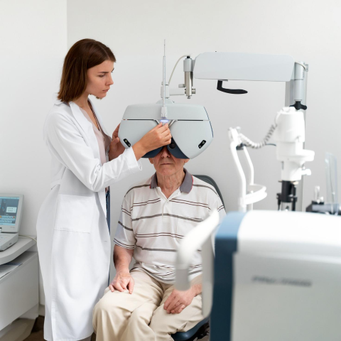

Best Eye Doctor in RR Nagar | Expert Ophthalmology Services in Bangalore
Expert Ophthalmology Services in Rajarajeshwari Nagar, Bangalore
Rashtrotthana Hospital’s Ophthalmology Department in RR Nagar offers precise, non-surgical eye care for children, adults and seniors. Our team of experienced eye specialists provides high-quality vision screenings, disease diagnosis and condition monitoring using advanced diagnostic technology. From routine vision checks to long-term management of serious conditions like glaucoma and diabetic retinopathy, we are committed to preserving your sight.
Patients often visit us for issues like eye pain, itchy eyes and watery eyes, burning sensation in eyes, eye irritation and red eyes. We ensure every consultation is personalized and every diagnosis is accurate.

Pediatric Eye Checkups - Early Vision Screening for Children
Children may not always know how to express vision trouble - and early intervention can shape their learning and development. At Rashtrotthana, we recommend pediatric eye checkups at key milestones:
- 6 months - 1 year: First baseline screening
- Around 3 years: Visual coordination and development check
- Before school entry (4-5 years): Ensure classroom readiness
- Every 1-2 years after, or earlier if symptoms appear
Signs like itchy eyes and watery eyes, squinting, poor focus, or eye pain should never be ignored. Our dedicated pediatric ophthalmologist doctor ensures your child receives the best start in visual health.
Glaucoma Eye Checkups - Detect It Before It Damages
Glaucoma is a stealthy condition that can gradually damage the optic nerve - often with no early signs. Our glaucoma eye checkups include pressure testing, optic nerve analysis, and visual field screening.
When to screen for glaucoma?
- Routine screening from age 40
- Earlier if diabetic, or with a family history of glaucoma
If you're experiencing eye pain, subtle vision loss, or even occasional burning sensation in eyes, schedule an appointment. We provide affordable eye care in RR Nagar Bangalore that prioritizes early detection and safe monitoring.
